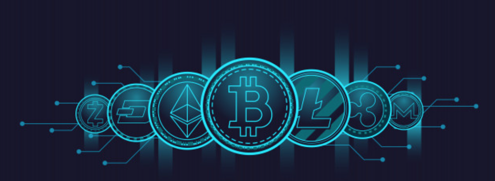

Blockchain & Cryptocurrencies
Mylaad Dawod
What does it do?
Since 2015, Cryptocurrency has become one of the most popular ways to invest, and purchase anonymously. It is a (Wikipedia 2020) digital asset created as a medium of exchange wherein individual coin ownership records are stored in a ledger existing in a form of computerized database using strong cryptography to secure transaction records, to control the creation of additional coins, and to verify the transfer of coin ownership (Wikipedia 2020). The cryptography aspect of cryptocurrency includes the usage of information security such as data (Wikipedia 2020) confidentiality, data integrity, authentication, and non-repudiation (Wikipedia 2020) which are part of to modern cryptography. Using mathematics and the disciplines of computer science, electoral engineering, communication science and physics, strong and secure algorithms are designed to be unbreakable to protect the information.
Currently, there are several cryptocurrencies that serve the same purpose as a secure payment method with no ‘middle-men’ just as purchasing with cash but on the internet. The cryptocurrencies that have risen in popularity are (SoFi 2019) Bitcoin, Bitcoin Cash, Litecoin, Ethereum, Ripple, Stellar, NEO and Cardano (SoFi 2019). One of the most popular forms of cryptocurrency that has changed the world globally is Bitcoin. Being number 1, Bitcoin holds the price value of QTY: 1 Bitcoin = $14,199.62 AUD on the 14/09/2020. It was (Wikipedia 2020) invented in 2008 by an unknown person or group of people using the name ‘Satoshi Nakamoto’ and started in 2009 when its implementation was released as an open-source software (Wikipedia 2020). The purpose of Bitcoin is to create a (Bitcoin n.d.) new payment method and digital money, it is a peer-to-peer payment network that is powered by users with no central authority or middlemen. As stated before, it is like serving the purpose of ‘cash’ on the internet in which this case the transaction is between 2 people, the seller and the buyer.
To accomplish a secure and safe transaction, the cryptocurrency ‘Bitcoin’ uses a database process called “Blockchain” to store the relevant information when a transaction is made. A blockchain is a (Wikipedia 2020) growing list of records, which are ‘blocks’ that are linked using cryptography. The blockchain for Bitcoin was also developed by the same person or group of people named “Satoshi Nakamoto”. It is (Murray, M 2018) shared across a network of computers that complete constant checks to ensure the copies of the database are the same across the network (Murray, M 2018). The blockchain works in a number of steps; where ‘Step 1’ records the (Murray, M 2018) transactions/trades details and assigns a digital signature, ‘Step 2’ is the process of checking the record by the network to make sure it is valid, ‘Step 3’ the details are added to a block with a hash key that also contains the hash from the previous block. The final step of the process adds the blocks to the Blockchain that is connected in a specific order due to the hash codes (Murray, M 2018).
The hash codes that complete and secure the trade/transaction records in the blockchain are created using Cryptography. Cryptography is the field of study of (Rouse, M 2020) protecting and securing information and communications using unique code (Rouse, M 2020). The cryptographic hashes are similar to a Merkle Tree, where the information of the previous block is stored in the current block.
Cryptography will evolve in the next few years since the requirement of protecting information using code will be necessary and in demand. Cryptocurrency will also increase its popularity in the future as people will want a more secure and private trade/transaction that cannot be accessed easily which will also require the hash codes to improve.
What is the likely impact?
Cryptocurrencies could have a huge impact on new technology, businesses and in our daily lives. The world of investing could change as technology evolves in the future, an example of this would be the cryptocurrency “Bitcoin”. According to (Google Finance 2020) “Currency and Database for Cryptocurrency”, Bitcoin’s price increased to $25000 AUD on the 15th of December 2017. This led to many people who have previously owned the cryptocurrency, who then sold it for a high profitable price. It also introduced people to invest and acquire Bitcoin and other crypto currencies since the price of selling them could be profitable or could be a great long-term investment. The security aspect of cryptocurrencies could also introduce and improve new technology since the blockchain for Bitcoin has worked efficiently.
The design of the “blockchain” is simplistic, the process is understandable, and the purpose is essential. It creates a greater approach to protecting personal or required information using unbreakable code. This would convince developers and security professionals to use cryptography in any way applicable to protect the classified information. Cryptocurrencies have had a great impact on the price for computer parts in the market in the previous years as mining for Bitcoin raised in popularity. This caused the price for Graphics Cards, (GPU), to increase in price as bitcoin miners were bulk buying. Businesses will have a dramatic effect on their sales, customers, and stocks due to the purpose that cryptocurrencies have. Customers will want a more secure and easier way to complete a transaction, instead of accessing a bank account to purchase stock, paying with a cryptocurrency would require less paper-work and need for a “middle-man”.
How will this affect you?
As cryptocurrencies increase in popularity, it has affected me in many ways. While building my personal computer, I came across the price increase that occurred for graphics cards which ranged from the standard price of a GPU increasing from $300 to $550, which was nearly double the price. This discouraged me to build my computer during that time since the prices were high, however I didn’t want to take the chance of waiting longer for the prices to drop down or increase which led me to buy the Gigabyte 1070ti at a price of $800 AUD at the time of June 2018. This was extremely high for the price of the graphics card that I had purchased. According to ebay.com, the price for the same card now has dropped down to $480 AUD 2 years after, nearly half its price.
It has also affected me to decide on which investments will be worth-while. A couple of my friends and I decided to invest and acquire a percentage of Bitcoin to gain profit. However during this time, according to TradingView, Bitcoin dropped to $4378 AUD on the 10th of December, 2018. This caused us to re-think our decision on purchasing a percentage of Bitcoin since it dropped down nearly $10000 worth from March in the same year. Although the price was around $4000 towards the end of the year 2018, on the 1st of June 2019, the price of Bitcoin increased in value to $17000 AUD according to TradingView. Upon hearing this, me and my friends were disappointed as we missed out on the chance of making profit by only purchasing a percentage of Bitcoin. I also concluded that any type of cryptocurrency is an unpredictable investment, where the value can increase and decrease at any time. It also encouraged me to view and research other stocks and shares that are stable and profitable in the long run.
References:
Wikipedia 2020, ‘Cryptocurrency’, Wikipedia. 3 September, viewed 14 September 2020
Wikipedia 2020, ‘Bitcoin’, Wikipedia. 15 September, viewed 14 September 2020
Wikipedia 2020, ‘Cryptography’, Wikipedia. 14 September viewed 15 September 2020
Bitcoin n.d., ‘Frequently Asked Questions’, Bitcoin n.d. viewed 15 September 2020,
SoFi 2019, ‘Understanding The Different Types of Cryptocurrency’, SoFi, 19 June, viewed 16 September 2020, Available at
Wikipedia 2020, ‘Blockchain’, Wikipedia, 17 September, viewed 16 September 2020
Rouse, M 2020, ‘Cryptography’, April, viewed 16 September 2020
Murray, M 2018, ‘Blockchain Explained’, 15 June, viewed 16 September 2020),
Google Finance 2020, ‘Exchanges’, 2020, viewed 15 September 2020,
TradingView 2018-2019, ‘Bitcoin/AustralianDollar BTC AUD Crypto Chart’, 2018-2019, viewed 17 September 2020,